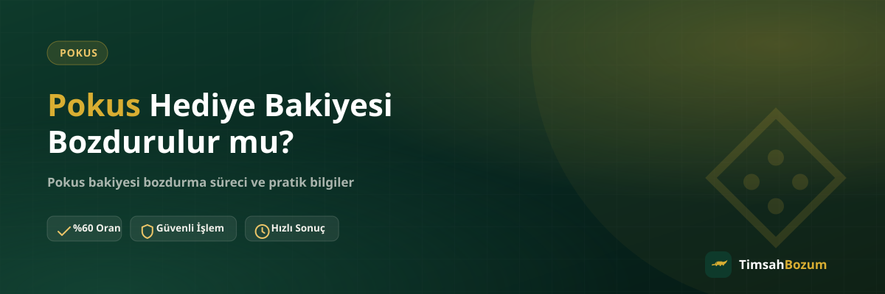

Pokus hesabına bir arkadaşından, bir kampanyadan veya bir ödül olarak bakiye geldiğinde, bu bakiyenin normal yüklenmiş bakiyeden farklı bir muameleye tabi olup olmadığı akla gelen ilk soru oluyor. "Hediye bakiyesi de bozdurulur mu, yoksa sadece kendi yüklediğim bakiye mi bozum için uygun?" sorusu, özellikle hesabına ilk kez hediye bakiye gelenler için kafa karıştırıcı olabiliyor. Bu yazıda hediye bakiyesinin bozum süreci açısından ne anlama geldiğini ve nasıl değerlendirildiğini anlatıyoruz.
Hediye Bakiyesi ile Normal Bakiye Arasında Fark Var mı?
Pokus bakiye tabanlı bir hizmettir; yani hesabında görünen rakam, o bakiyenin hesaba hangi yoldan geldiğini ayrıca etiketlemez. Bir arkadaşın gönderdiği hediye bakiyesi de, kendi yüklediğin bakiye de, bir kampanya sonucu hesabına yansıyan bakiye de hesap ekranında aynı şekilde görünür. Bozum süreci de bu ekranda görünen güncel bakiyeyi esas alır, bakiyenin kaynağını ayrıca sorgulamaz.
Bu nedenle "hediye bakiyesi" diye ayrı bir kategori, bozum işlemi açısından pratikte bir farklılık oluşturmaz. Önemli olan, bakiyenin hesabında görünür ve senin erişiminde olmasıdır.
Hediye Bakiyesi Bozdurmak Güvenilir mi?
Süreç, kaynağı ne olursa olsun aynı şekilde işler: güncel bakiyeni gösteren bir ekran görüntüsü paylaşırsın, oranı teyit edersin, onay sonrası ödeme WhatsApp üzerinden görüşülen yöntemle yapılır. Üyelik, form doldurma veya kimlik belgesi istenmez; hesabına erişim de talep edilmez. Tek yapman gereken, resmi WhatsApp hattımızdan (+90 543 887 21 71) yazıp süreci başlatmak.
Hediye Bakiyesinin Tamamını mı Bozdurmalıyım?
Hayır. Pokus bakiye tabanlı olduğu için kısmi bozum mümkündür. Hediye bakiyesinin de tamamını bozdurmak zorunda değilsin, istersen bir kısmını bozdurup kalanını hesabında bırakabilirsin. Bu, kod tabanlı hizmetlerden (Razer Gold, iTunes gibi) farklı bir özellik; kod tabanlı hizmetlerde kodun tam değeri tek seferde değerlendirilirken, bakiye tabanlı Pokus'ta istediğin tutarı seçebilirsin.
Hediye Bakiyesi Bozdururken Hangi Bilgiyi Paylaşmalıyım?
Hesabındaki güncel bakiyeni gösteren, tutarın net okunduğu bir ekran görüntüsü yeterli. Bakiyenin hediye yoluyla geldiğini ayrıca belirtmen gerekmez, çünkü süreç ekranda görünen rakam üzerinden ilerler. Ekran görüntüsünün güncel tarihli ve bulanık olmayan bir görüntü olmasına dikkat etmek, işlemi hızlandırır.
Hediye Bakiyesi Bozdurma İşlemi Ne Kadar Sürer?
Süreç, diğer Pokus bozum işlemleriyle aynı adımları takip eder: WhatsApp'tan bilgini paylaşman, oranı teyit etmen ve onay sonrası ödemenin gerçekleşmesi. Tam süreyi etkileyen asıl faktör, paylaşılan bilginin eksiksiz ve okunaklı olması; güncel bilgiyi WhatsApp'tan teyit etmek en doğru yaklaşım olur.
Hediye Bakiyesi Bozdurma İşlemi Neden Reddedilebilir?
Bakiyenin hesapta görünmemesi, ekran görüntüsünün eski bir tarihe ait olması veya bakiyeye artık erişimin olmaması gibi durumlar işlemi geciktirebilir ya da reddedilmesine yol açabilir. Hediye bakiyesi de dahil olmak üzere, bozum için esas şart bakiyenin görünür ve erişilebilir olmasıdır; bu şart karşılanmadığında süreç ilerlemez.
Hediye Bakiyesinin Kaynağını Belgelemem Gerekir mi?
Hayır, bozum süreci için hediye bakiyesinin hangi kampanyadan, hangi arkadaştan veya hangi ödülden geldiğine dair bir belge veya ekran görüntüsü istenmez. Sadece hesabındaki güncel bakiyenin görünür olması yeterli; bakiyenin kökenine dair ek bir kanıt sunman beklenmez. Bu, hem senin için işlemi basitleştirir hem de sürecin gereksiz yere uzamasını önler.
Hesabına Birden Fazla Kaynaktan Bakiye Gelmişse Ne Olur?
Bazı kullanıcıların hesabında hem kendi yüklediği bakiye hem de arkadaşından gelen hediye bakiye birlikte görünebilir. Bu durumda ikisi tek bir toplam bakiye olarak ekranda yer alır ve bozum işlemi bu toplam üzerinden değerlendirilir. Hangi kısmın hediye, hangi kısmın kendi yüklemen olduğunu ayrıca ayırt etmene gerek yok; paylaşman gereken tek bilgi, o anki güncel toplam bakiyedir.
WhatsApp'ta Durumu Nasıl Anlatmalıyım?
"Hesabımda hediye bakiye var, bunu bozdurmak istiyorum" cümlesi ve güncel ekran görüntüsü, süreci başlatmak için yeterli. Bakiyenin nereden geldiğini uzun uzun açıklamana gerek yok; ekranda görünen rakam ve bozdurmak istediğin tutar netse işlem hızlıca ilerler.
Hediye Bakiyesi Hesabına Yansımadan Bozdurulabilir mi?
Bozum işleminin başlayabilmesi için bakiyenin hesabında görünür hale gelmiş olması gerekir. Bir arkadaşının gönderdiğini söylediği ama henüz hesabına yansımamış bir hediye bakiyesi, ekranda görünmediği sürece bozum sürecine dahil edilemez. Bu yüzden hediye bakiyesi gönderildiyse önce hesabına işlendiğinden emin olmak, sonrasında ekran görüntüsünü almak en doğru sıralama olur.
Hediye Bakiyesi Göndereni Bozum Sürecine Dahil Etmem Gerekir mi?
Hayır. Bakiye hesabına geçtiği andan itibaren senin bakiyen haline gelir ve bozum sürecini sadece sen, hesabındaki güncel görüntüyü paylaşarak yürütürsün. Bakiyeyi gönderen kişinin işleme ayrıca dahil olmasına veya onay vermesine gerek yoktur; süreç tamamen hesabındaki bakiyenin sahibi olarak senin üzerinden ilerler.
Hediye Bakiyesini Hemen mi Bozdurmalıyım, Yoksa Bekleyebilir miyim?
Hediye bakiyesini ne zaman bozduracağına tamamen sen karar verirsin; bakiyenin hesabında belirli bir süre beklemesi bozum işlemine engel değildir. Önemli olan, işleme başladığın anda ekranda görünen bakiyenin güncel ve doğru olması. Acele etmene gerek yok, uygun bulduğun zaman güncel ekran görüntünle süreci başlatabilirsin.
Hesabındaki hediye bakiyeni bozdurmak için güncel ekran görüntünle WhatsApp hattımıza yazarak süreci başlatabilirsin.
İlgili Yazılar
- Pokus Bakiyesi Kısmi Olarak Bozdurulabilir mi?
- Pokus Bozdururken Hesabıma Erişim Veriyor muyum?
- Pokus Bakiye Ekran Görüntüsü Nasıl Doğru Paylaşılır?